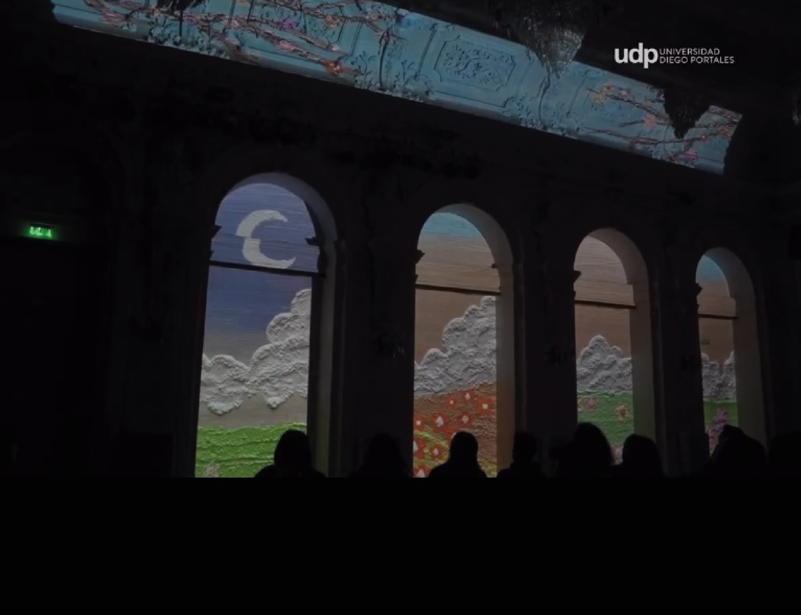
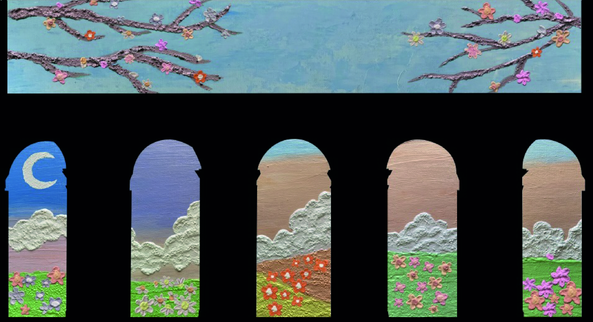
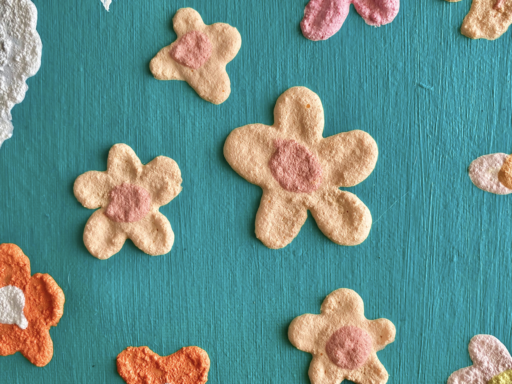
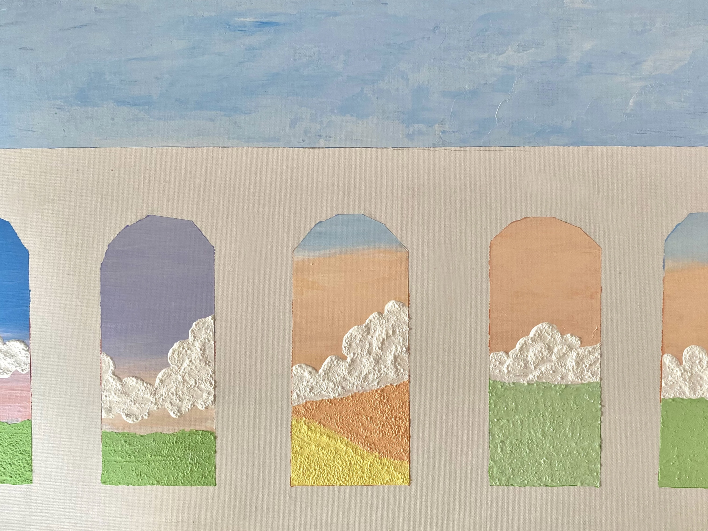

Interpretación audiovisual Sinfonía Eroica L.V Beethoven
El Teatro Municipal fue escenario de un espectáculo de mapping audiovisual basado en la interpretación de la Sinfonía Eroica de Beethoven. El proyecto se dividió entre los miembros del curso, quienes fueron responsables de animar diferentes fragmentos de la obra. En mi segmento, se desarrollé elementos visuales creados a mano utilizando pintura acrílica y técnicas de volumen, los cuales luego fueron digitalizados, editados en Photoshop y animados en After Effects. La estética floral, ligera y colorida aportó un aire fresco y emotivo, complementando de manera única la experiencia musical en vivo.
- Integrantes: Catalina Álvarez.
- Fecha: 16/07/2023
- Temática Animación digital
- Recursos usados: Pintura Acrílica, Photoshop, After Effects.